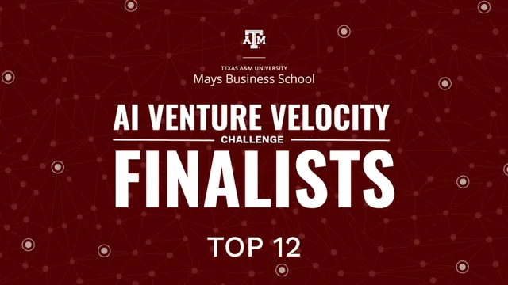
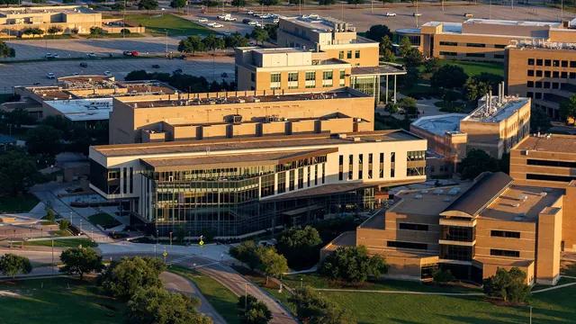
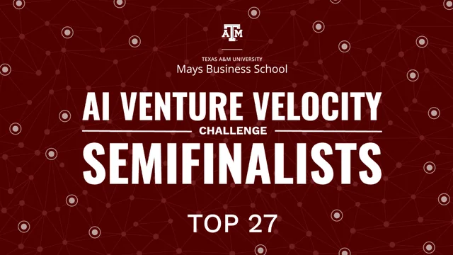
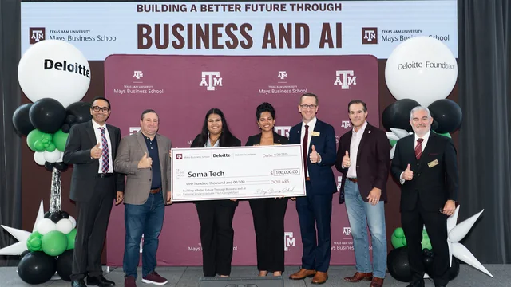
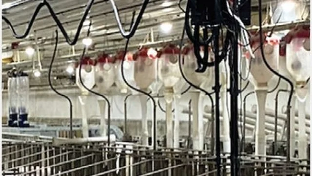

Resources
Read, watch, and check us out.
The press our work has turned up in, the farm bill language that decides who pays for barn technology, our own videos and the podcasts behind it, and the programs and organizations standing with us.
Press and recognition
In the news

News · September 2026Mays names the 12 finalists of the AI Venture Velocity Challenge
Smart Swine is one of 12 finalists, narrowed from 27 semifinalists and 531 entries in the national competition at Mays Business School.
mays.tamu.edu/news
Program · The Top 12What made the Top 12 different
The finalists in Mays’ own words, including its summary of Smart Swine: years of research moved into a commercial-farm deployment, pricing assumptions tested, and meaningful interest earned from operators.
mays.tamu.edu/ai/competition
News · July 2026Mays announces semifinalists in the national AI Venture Velocity Challenge
Smart Swine named among 27 semifinalists selected from 531 teams across 160 universities.
mays.tamu.edu/news
ProgramAI Venture Velocity Challenge
The national competition itself: the format, the judging rubric and the public dashboard.
mays.tamu.edu/ai/competition
Magazine · Spring 2026Next Step in Precision Sow Management
PigCHAMP Benchmark, U.S. edition. Dr. Ziteng “Tim” Xu writes up the robotic imaging work behind Smart Swine: 3D images of individual sows every ten minutes, replacing back-pressure testing and manual barn checks.
pigchamp.com · Benchmark 2026Policy and funding
Congress is rewriting who pays for barn technology
The farm bill moving through Congress would put livestock sensors on the list of equipment USDA helps a producer buy, and would raise how much of the bill it covers. None of it is law yet, so read this as the direction of travel rather than money on the table.
Farm, Food, and National Security Act of 2026
The House farm bill would let USDA cover up to 90 percent of what a producer spends adopting precision agriculture technology, against a 75 percent ceiling under current law. The provision is in Section 2202 of the conservation title.
congress.gov · H.R. 7567 Bill text · Section 2001Livestock sensors are named in the definition
Section 2001 writes a federal definition of precision agriculture technology that lists sensors for gathering data on livestock conditions, Internet of Things devices, and data analytics software. A farrowing monitor sits inside that language.
govinfo.gov · full bill text ReportingThe Senate draft would lend rather than cost share
DTN on the Senate version, which routes the same equipment through guaranteed conservation loans of up to 2.3 million dollars per producer, again with livestock condition sensors on the eligible list.
dtnpf.com AnalysisHow the two drafts differ
Congressional Research Service, the House and Senate farm bills set beside current law. The conservation title is where the precision agriculture money sits.
congress.gov · CRS R48918 ProgramEQIP, the program all of this runs through
Cost share for conservation practices, open today at up to 75 percent. A producer applies at their local NRCS service center, and the payment goes to the farm, not to the company that made the equipment.
nrcs.usda.gov ExplainerA plain reading of the whole bill
University of Illinois Extension walks through the farm bill title by title, for producers who want the parts that are not about sensors as well.
extension.illinois.eduWhere this stands as we write: the House passed H.R. 7567 in April 2026, the Senate Agriculture Committee did not advance its own version in August 2026, and nothing has been signed into law. Even if a bill passes, the higher rate is a ceiling the Secretary may use and not a guarantee, it applies only where the technology supports a conservation practice, and USDA would still have to write the rules first. None of this is money a farm can spend on a monitor today. We post it because it changes what one could eventually cost.
Watch and listen
On camera
 1:07
Our video · September 2026
1:07
Our video · September 2026
Reflection video: Smart Swine, LLC
One minute made for the AI Venture Velocity Challenge: what the venture tested and learned on the way to the finals, and where AI helped us move faster.
youtube.com 2:31
Our video · June 2026
2:31
Our video · June 2026
Meet Smart Swine
Two and a half minutes to camera: who we are, what happens in a farrowing room and why we decided to point a camera at it.
youtube.com 33:58
Podcast · May 2025
33:58
Podcast · May 2025
Dr. Ziteng Xu: Precision Livestock Technologies
Our co-founder Dr. Ziteng “Tim” Xu on The Swine it Podcast Show, on robotic camera systems, respiration monitoring and preventing piglet crushing. The chapter at 18:06 is the problem SPM-01 was built for.
youtube.com · Swine Podcasts 26:40
Podcast · July 2024
26:40
Podcast · July 2024
Dr. Ziteng Xu: Automated Estrus Detection
Tim’s earlier episode, on The Swine it Podcast Show Canada: automated sow monitoring before the work turned toward the farrowing crate.
youtube.com · Swine it CanadaDownloads
Product brochures
SPM-01 Smart Piglet Monitor
The full product brochure: the dual-axis sensor, sealing, mounting, the app and the validation numbers behind them.
SPM-01_Product_Brochure.pdf Brochure · PDFSPC-01 Smart Piglet Curtain
The concept brochure: the three-second crushing window, the four-posture rule and the curtain that closes it.
SPC-01_Product_Brochure.pdfIndustry and programs
The wider network
Pork-industry organizations that helped us reach producers, and the federal programs behind our non-dilutive support.
National Pork Board
Producer research, education and the Pork Checkoff.
pork.org CommunityTexas Pork Producers Association
The state association that helped carry our producer survey.
texaspork.org CommunityMissouri Pork Association
Missouri pig farmers, a second survey distribution channel.
mopork.com Grant programAmerica's Seed Fund (NSF SBIR/STTR)
Non-dilutive seed funding for deep-tech startups, no equity taken.
seedfund.nsf.gov Grant programUSDA-NIFA SBIR/STTR
Competitive grants for small businesses commercializing agricultural innovation.
nifa.usda.gov ProgramMcFerrin Center for Entrepreneurship
Texas A&M's campus-wide entrepreneurship hub.
mcferrin.tamu.eduPork-industry organizations listed here provided letters of support and survey distribution. They are not investors, customers or commercial partners. Federal programs are listed as the sources of non-dilutive grant support, not as endorsements.
Something you couldn't find?
Press kit, technical detail, research collaboration: just ask.